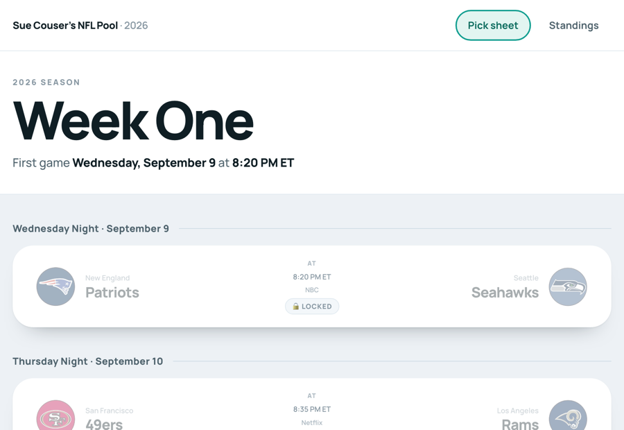
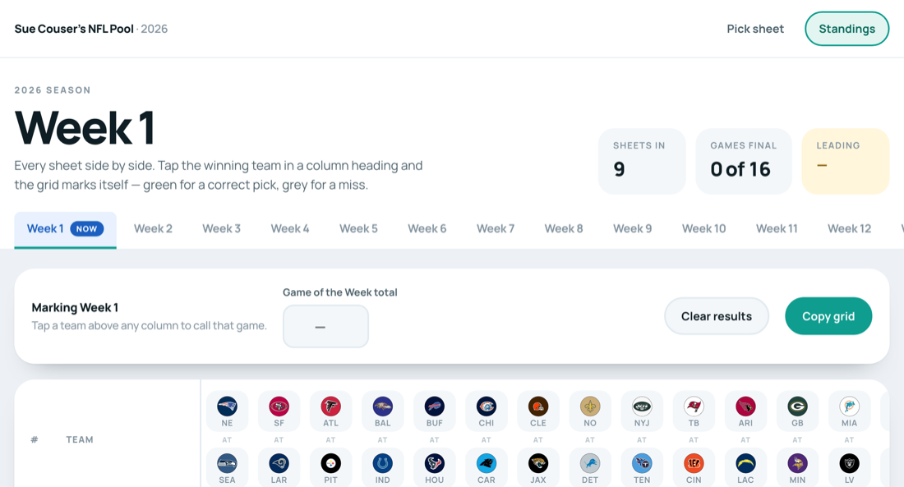
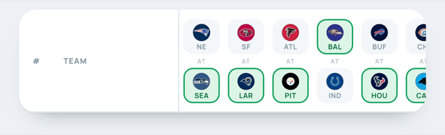
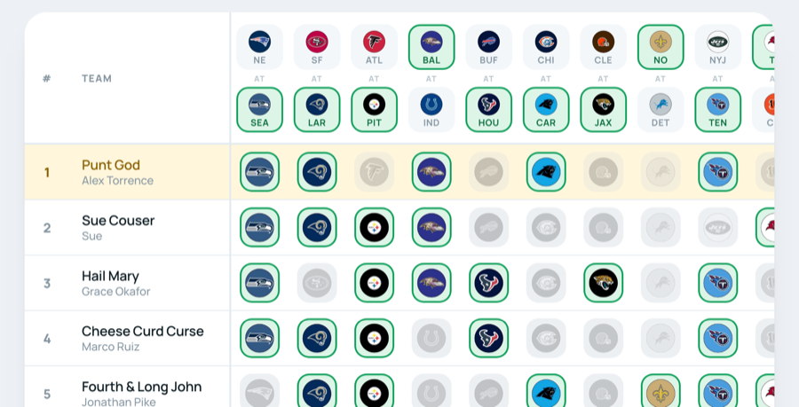
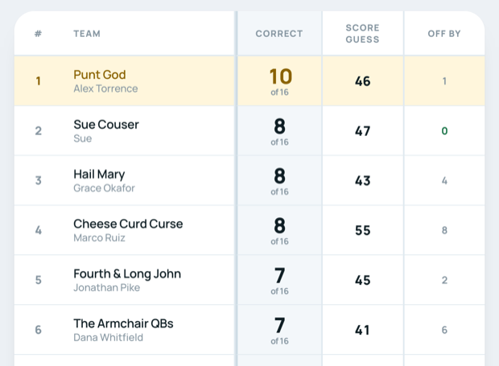
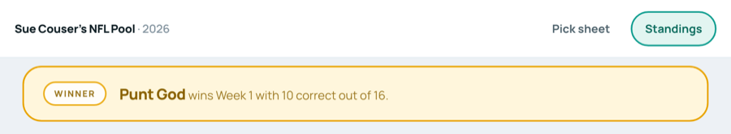
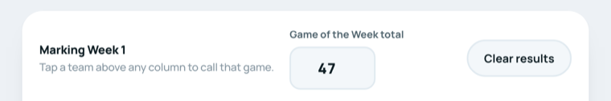
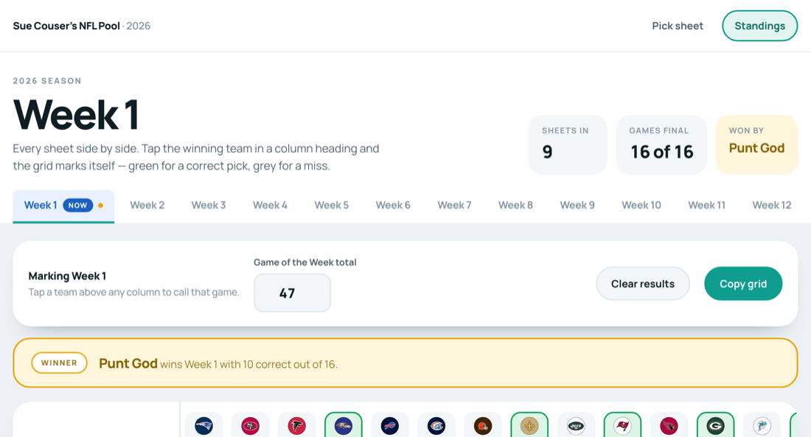

<meta charset="utf-8">
<meta name="viewport" content="width=device-width, initial-scale=1">
<meta name="robots" content="noindex, nofollow, noarchive, nosnippet, noimageindex">
<link rel="icon" type="image/png" sizes="32x32" href="assets/icon-32.png">
<link rel="icon" type="image/png" sizes="192x192" href="assets/icon-192.png">
<link rel="apple-touch-icon" sizes="180x180" href="assets/icon-180.png">
<title>Running the Pool</title>
<link rel="preconnect" href="https://fonts.googleapis.com">
<link rel="preconnect" href="https://fonts.gstatic.com" crossorigin>
<link rel="stylesheet" href="https://fonts.googleapis.com/css2?family=Manrope:wght@400;500;600;700;800&display=swap">
<style>
:root{
  --ground:#EDF1F5; --card:#fff; --soft:#F3F7FA;
  --ink:#0F1E24; --ink-2:#3E525C; --ink-3:#7B8B95;
  --line:#E1EAF0; --accent:#0F9D8F; --accent-dark:#0A6E63; --accent-soft:#E2F5F1;
  --win:#E9A400; --win-bg:#FFF6DC; --win-ink:#7A5600;
  --shadow:0 1px 2px rgba(15,30,36,.05), 0 20px 32px -26px rgba(15,30,36,.5);
}
*{box-sizing:border-box}
body{margin:0; background:var(--ground); color:var(--ink);
  font-family:"Manrope",-apple-system,"Helvetica Neue",Arial,sans-serif;
  font-size:19px; line-height:1.65; -webkit-font-smoothing:antialiased}
h1,h2,h3{margin:0; text-wrap:balance}
img{max-width:100%; height:auto; display:block}
a{color:var(--accent-dark)}
.wrap{max-width:780px; margin:0 auto; padding:0 20px 100px}

.top{background:var(--card); border-bottom:1px solid var(--line)}
.top__in{max-width:780px; margin:0 auto; padding:40px 20px 34px}
.eyebrow{font-weight:800; font-size:12.5px; letter-spacing:.16em; text-transform:uppercase; color:var(--ink-3)}
h1{font-size:clamp(38px,7vw,54px); font-weight:800; letter-spacing:-.035em; line-height:1; margin-top:12px}
.lede{color:var(--ink-2); margin:18px 0 0; font-size:21px; max-width:34ch}

.card{background:var(--card); border-radius:24px; padding:30px 32px; box-shadow:var(--shadow); margin-top:24px}
.card h2{font-size:27px; font-weight:800; letter-spacing:-.03em}
.card h3{font-size:20px; font-weight:800; letter-spacing:-.02em; margin-top:26px}
.card p{margin:14px 0 0; color:var(--ink-2)}
.card p b, .card li b{color:var(--ink); font-weight:800}
.card ul{margin:14px 0 0; padding-left:22px; color:var(--ink-2)}
.card li{margin-top:9px}
@media(max-width:560px){ .card{padding:22px 20px; border-radius:20px} body{font-size:18px} }

.step{display:flex; gap:18px; align-items:flex-start; margin-top:34px}
.step:first-of-type{margin-top:22px}
.num{flex:0 0 auto; width:44px; height:44px; border-radius:50%; background:var(--accent); color:#fff;
  display:grid; place-items:center; font-weight:800; font-size:21px}
.step__body{min-width:0; flex:1}
.step__body h3{margin-top:4px}

figure{margin:18px 0 0}
figure img{border-radius:14px; border:1px solid var(--line); background:#fff}
figcaption{margin-top:10px; font-size:16px; color:var(--ink-3); font-weight:600}

.big{background:var(--accent-soft); border-radius:18px; padding:20px 24px; margin-top:22px;
  color:var(--accent-dark); font-weight:600}
.big b{font-weight:800}
.warn{background:var(--win-bg); color:var(--win-ink); border-radius:18px; padding:20px 24px; margin-top:22px; font-weight:600}
.link{display:inline-block; margin-top:20px; background:var(--accent); color:#fff; text-decoration:none;
  font-weight:800; font-size:19px; padding:16px 30px; border-radius:99px}
.link:hover{background:var(--accent-dark)}
.qa{margin-top:26px; padding-top:22px; border-top:1px solid var(--line)}
.qa:first-of-type{border-top:0; padding-top:0; margin-top:18px}
.qa b{display:block; font-size:19px; color:var(--ink); font-weight:800}
.qa p{margin-top:8px}
.chip{display:inline-block; background:var(--soft); border:1px solid var(--line); border-radius:8px;
  padding:2px 9px; font-weight:700; font-size:17px; color:var(--ink)}
</style>

<header class="top">
  <div class="top__in">
    <div class="eyebrow">Sue Couser&rsquo;s NFL Pool</div>
    <h1>Running the pool</h1>
    <p class="lede">Everything you need to know, and nothing you don&rsquo;t. It should take about ten minutes to read.</p>
  </div>
</header>

<main class="wrap">

  <section class="card">
    <h2>What changes for you</h2>
    <p>Everyone used to send you their picks and you typed them all into a spreadsheet. That part is finished.</p>
    <p>Now each person fills in their own picks on a web page. They arrive on your page by themselves, already laid out in a grid. Nothing to type, nothing to chase, nothing to add up.</p>
    <div class="big">The only job left for you is <b>telling it who won each game</b>. That is one tap per game, sixteen taps, once a week. Everything else it does on its own.</div>
  </section>

  <section class="card">
    <h2>There are two pages</h2>
    <p>Along the top of every page there are two words. Those are the only two pages there are, and you switch between them by clicking.</p>
    <h3>Pick sheet</h3>
    <p>This is where people choose their teams. You use it too, if you&rsquo;re playing.</p>
    <figure><figcaption>Tap a team and it lights up in that team&rsquo;s colours. That&rsquo;s the whole thing.</figcaption></figure>
    <h3>Standings</h3>
    <p>This is your page &mdash; where everyone&rsquo;s picks appear and where you mark the winners.</p>
  </section>

  <section class="card">
    <h2>Before the games are played</h2>
    <p>There is nothing for you to do. People send their sheets in during the week, and until <b>1:00 PM Eastern on Sunday</b> they can change their minds as often as they like.</p>
    <p>Until that moment, <b>nobody can see anybody else&rsquo;s picks</b> &mdash; not even you. The page shows a list of who has sent theirs in, and a clock counting down. That is on purpose, so nobody can copy.</p>
    <p>At 1:00 PM Sunday it opens up on its own. You don&rsquo;t have to do anything to make that happen.</p>
  </section>

  <section class="card">
    <h2>After the games: your three steps</h2>

    <div class="step">
      <div class="num">1</div>
      <div class="step__body">
        <h3>Open the Standings page</h3>
        <p>You&rsquo;ll see everyone&rsquo;s picks laid out. Each column is one game. The two teams playing are at the top of the column.</p>
        <figure><figcaption>Nine sheets in. No games called yet.</figcaption></figure>
      </div>
    </div>

    <div class="step">
      <div class="num">2</div>
      <div class="step__body">
        <h3>Tap the team that won</h3>
        <p>At the top of each column are the two teams. <b>Tap the one that won.</b> It turns green.</p>
        <figure><figcaption>The ones with a green ring have been called. Tapped the wrong team? Tap the right one and it moves.</figcaption></figure>
        <p>Work along the row, one tap per game. Sixteen taps and you&rsquo;re done.</p>
      </div>
    </div>

    <div class="step">
      <div class="num">3</div>
      <div class="step__body">
        <h3>That&rsquo;s it &mdash; it does the rest</h3>
        <p>As you tap, everybody&rsquo;s picks mark themselves.</p>
        <figure><figcaption><b>Green ring</b> means they got it right. <b>Faded grey</b> means they got it wrong.</figcaption></figure>
      </div>
    </div>
  </section>

  <section class="card">
    <h2>Who won the week</h2>
    <p>It counts everyone up for you and puts the best score at the top, all the way down to the worst at the bottom.</p>
    <figure><figcaption>The <b>Correct</b> column is the score. The winner&rsquo;s whole row turns gold.</figcaption></figure>
    <p>Once every game is called, a gold bar appears across the top telling you who won.</p>
    <figure></figure>
  </section>

  <section class="card">
    <h2>When two people tie</h2>
    <p>This is where the Game of the Week guess comes in. Everyone guessed the two teams&rsquo; scores added together.</p>
    <p>Type the real total into the box at the top and it settles the tie for you &mdash; closest guess wins.</p>
    <figure><figcaption>Both teams&rsquo; points added together. If the Chiefs win 27&ndash;20, you type <span class="chip">47</span>.</figcaption></figure>
    <p>The <b>Off by</b> column then shows how far out each person was, and the gold bar says something like <i>&ldquo;wins Week 1 on the tiebreaker &mdash; 12 correct, 1 off the Game of the Week total.&rdquo;</i></p>
  </section>

  <section class="card">
    <h2>The season table</h2>
    <p>Along the top of the Standings page there is a tab for every week, and one at the far right called <b>Season standings</b>.</p>
    <p>That one adds every week together. One line per person, one column per week, and their running total. Highest at the top.</p>
    <figure><figcaption>You never have to add anything up. It does it as each week is called.</figcaption></figure>
    <p>The week that is currently being played is marked in blue with the word <b>NOW</b>, so you can always find your place.</p>
  </section>

  <section class="card">
    <h2>A few things that might worry you</h2>

    <div class="qa"><b>What if I tap the wrong team?</b>
      <p>Tap the right one instead. It changes immediately and everyone&rsquo;s scores redo themselves. Nothing breaks. There is also a <span class="chip">Clear results</span> button that wipes the week clean if you want to start again.</p></div>

    <div class="qa"><b>It asked me for a password.</b>
      <p>That&rsquo;s right, and only you have it. It stops anyone else marking the games. Type it once and the computer remembers it.</p></div>

    <div class="qa"><b>Do I need to save anything?</b>
      <p>No. Every tap is saved the moment you make it. There is no save button because there doesn&rsquo;t need to be one.</p></div>

    <div class="qa"><b>Can I still keep my spreadsheet?</b>
      <p>If you like. The <span class="chip">Copy grid</span> button copies the whole week, and you can paste it straight into Excel.</p></div>

    <div class="qa"><b>What if someone doesn&rsquo;t send their picks in?</b>
      <p>They simply won&rsquo;t appear that week. Nothing goes wrong. The list of who has sent theirs in tells you who to chase.</p></div>

    <div class="qa"><b>Does it work on my phone?</b>
      <p>Yes, and on a tablet. The Standings page is wide, so you slide it sideways with your finger to see all the games. A computer is easier for marking the winners.</p></div>

    <div class="qa"><b>I&rsquo;ve broken something.</b>
      <p>You almost certainly haven&rsquo;t &mdash; there is nothing on the page that can delete anyone&rsquo;s picks. But if something looks wrong, close it, open it again, and give me a shout.</p></div>
  </section>

  <section class="card">
    <h2>That&rsquo;s everything</h2>
    <p>Sixteen taps on a Monday night and the pool runs itself. No emails, no spreadsheet, no adding up.</p>
    <a class="link" href="grid.html">Open the Standings page</a>
  </section>

</main>
